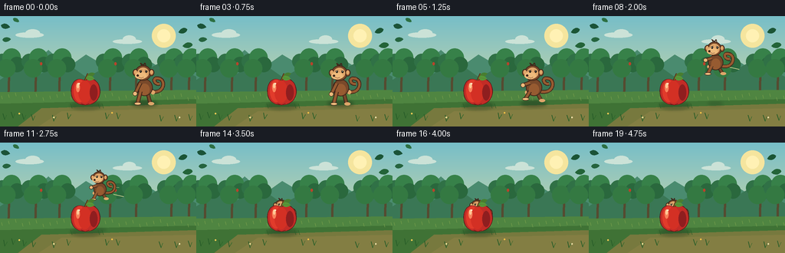
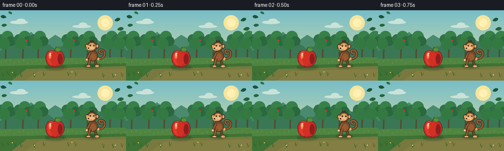

CODING AGENTS AS PIXEL WORLD MODELS
traex/GPT-5.6-Sol · dynamic_spatial_relationship_0058
点击播放 · 原生 RGB 像素
逐轮保存的候选
回放视频、检查图与代码变化。
每份候选均可单独播放。实际图片检查记录在下方工具轨迹中。
候选 01播放与检查图
点击播放 · 原生 RGB 像素


展开代码变化
--- 上一保存版本
+++ 本次保存版本
@@ -0,0 +1,237 @@
+from pathlib import Path
+import math
+import numpy as np
+from PIL import Image, ImageDraw, ImageFilter
+import artifact_io
+
+W, H, N = 256, 144, 20
+S = 3
+
+
+def sc(v): return int(round(v*S))
+def box(b): return tuple(sc(x) for x in b)
+def pts(ps): return [(sc(x), sc(y)) for x,y in ps]
+
+def ellipse(d, b, fill, outline=None, width=1):
+ d.ellipse(box(b), fill=fill, outline=outline, width=sc(width) if outline else 1)
+def polygon(d, p, fill): d.polygon(pts(p), fill=fill)
+def line(d, p, fill, width=1, joint='curve'):
+ d.line(pts(p), fill=fill, width=max(1, sc(width)), joint=joint)
+def rr(d, b, r, fill, outline=None, width=1):
+ d.rounded_rectangle(box(b), radius=sc(r), fill=fill, outline=outline,
+ width=sc(width) if outline else 1)
+
+def cubic(p0,p1,p2,p3,n=30):
+ out=[]
+ for i in range(n):
+ t=i/(n-1); u=1-t
+ out.append((u**3*p0[0]+3*u*u*t*p1[0]+3*u*t*t*p2[0]+t**3*p3[0],
+ u**3*p0[1]+3*u*u*t*p1[1]+3*u*t*t*p2[1]+t**3*p3[1]))
+ return out
+
+def leaf(d, x,y,ang,sz,color, vein=True):
+ ca,sa=math.cos(ang),math.sin(ang)
+ def tr(a,b): return (x+(a*ca-b*sa)*sz, y+(a*sa+b*ca)*sz)
+ shape=cubic(tr(0,0),tr(2,-4),tr(8,-4),tr(11,0),10)+cubic(tr(11,0),tr(7,4),tr(2,4),tr(0,0),10)
+ polygon(d,shape,color)
+ if vein: line(d,[tr(1,0),tr(9.5,0)],(93,112,47),.55)
+
+def make_background():
+ h,w=H*S,W*S
+ arr=np.zeros((h,w,3),dtype=np.uint8)
+ top=np.array([119,190,200.]); bot=np.array([229,222,158.])
+ for y in range(h):
+ t=y/(h-1)
+ c=top*(1-t)+bot*t
+ arr[y,:,]=c
+ im=Image.fromarray(arr)
+ d=ImageDraw.Draw(im)
+ # hazy sun
+ ellipse(d,(198,10,229,41),(245,229,158))
+ ellipse(d,(205,17,222,34),(255,241,180))
+ # distant cloud wisps
+ for b in [(20,21,57,28),(33,17,52,27),(147,30,185,36),(160,25,177,35)]:
+ ellipse(d,b,(203,226,215))
+ # distant hills
+ polygon(d,[(0,73),(20,57),(39,66),(63,44),(88,67),(112,50),(144,69),(174,46),(207,66),(228,53),(256,70),(256,103),(0,103)],(74,139,111))
+ polygon(d,[(0,83),(27,65),(50,77),(82,58),(113,80),(146,62),(177,78),(213,58),(256,79),(256,107),(0,107)],(58,119,85))
+ # far orchard trees
+ for x in [12,47,78,144,178,224,247]:
+ line(d,[(x,65),(x-1,104)],(86,74,48),3)
+ line(d,[(x,72),(x-8,61)],(86,74,48),1.4)
+ line(d,[(x,76),(x+9,63)],(86,74,48),1.4)
+ for ox,oy,r,c in [(-9,-9,10,(48,113,70)),(3,-14,12,(55,129,73)),(10,-5,10,(42,104,61)),(-4,0,12,(52,121,66))]:
+ ellipse(d,(x+ox-r,68+oy-r,x+ox+r,68+oy+r),c)
+ if x in [47,144,224]: ellipse(d,(x+5,60,x+8,64),(186,66,43))
+ # meadow base gradient bands
+ polygon(d,[(0,99),(256,96),(256,144),(0,144)],(79,133,65))
+ polygon(d,[(0,114),(256,108),(256,144),(0,144)],(63,114,53))
+ # distant grass streaks
+ for x in range(3,256,9):
+ y=104+(x*13%7)
+ line(d,[(x,y),(x-1,y-4)],(121,159,76),.65)
+ # foreground path under subjects
+ polygon(d,[(54,120),(256,114),(256,144),(23,144)],(119,121,62))
+ polygon(d,[(80,124),(256,120),(256,144),(50,144)],(131,126,67))
+ # frame foliage vignette
+ for x,y,a,sz,c in [(1,12,.2,1.1,(27,83,56)),(3,31,-.1,1,(37,100,62)),(244,17,2.8,1.1,(27,85,53)),(251,37,3.0,1.2,(35,100,56)),(17,3,.5,.8,(44,111,66))]:
+ leaf(d,x,y,a,sz,c,False)
+ return im
+
+BG=make_background()
+
+def ground_details(d, frame):
+ # small foreground grasses and flowers
+ for x in [6,17,31,43,70,89,139,154,210,230,248]:
+ y=137-(x*7%5)
+ lean=math.sin(frame*.18+x)*.6
+ line(d,[(x,y),(x+lean-2,y-8)],(39,91,40),1)
+ line(d,[(x,y),(x+lean+3,y-6)],(46,102,43),.8)
+ for x,y,c in [(25,127,(247,205,85)),(70,132,(236,225,151)),(146,126,(244,193,70)),(234,132,(238,221,165))]:
+ ellipse(d,(x-1,y-1,x+1,y+1),c)
+
+def shadow_layer(frame, mx, jump, scale):
+ lay=Image.new('RGBA',(W*S,H*S),(0,0,0,0)); d=ImageDraw.Draw(lay)
+ # apple fixed shadow
+ ellipse(d,(92,112,132,122),(28,48,27,75))
+ # monkey shadow tracks horizontal position and contracts/lightens in air
+ alt=max(0,jump)
+ rw=17*scale*(1-.42*alt)
+ ellipse(d,(mx-rw,114-rw*.24,mx+rw,114+rw*.24),(20,38,24,int(95-48*alt)))
+ return lay.filter(ImageFilter.GaussianBlur(sc(2.0)))
+
+def draw_monkey(im,cx,cy,size,pose,frame):
+ d=ImageDraw.Draw(im)
+ dark=(63,38,26); fur=(121,73,42); fur2=(151,91,49); face=(223,166,106); face2=(238,187,124)
+ # local converter, character faces left
+ def P(x,y): return (cx+x*size,cy+y*size)
+ def E(x0,y0,x1,y1,fill,outline=None,w=1): ellipse(d,(*P(x0,y0),*P(x1,y1)),fill,outline,w)
+ def L(pp,fill,w): line(d,[P(x,y) for x,y in pp],fill,w*size)
+ # poses: idle, crouch, airborne, landed
+ if pose=='air':
+ swing=math.sin(frame*.8)*1.2
+ hip=(-1,9); lfoot=(-11,18+swing); rfoot=(10,18-swing)
+ lhand=(-14,-1); rhand=(-9,8)
+ elif pose=='crouch':
+ hip=(0,10); lfoot=(-10,20); rfoot=(10,20); lhand=(-13,8); rhand=(8,11)
+ elif pose=='landed':
+ hip=(0,10); lfoot=(-8,21); rfoot=(8,21); lhand=(-11,8); rhand=(10,7)
+ else:
+ bob=math.sin(frame*.8)*.6
+ hip=(0,9); lfoot=(-9,23); rfoot=(8,23); lhand=(-12,10+bob); rhand=(11,8-bob)
+ # tail behind body, a clear curled silhouette
+ tail=cubic(P(8,7),P(27,12),P(29,-9),P(18,-10),24)+cubic(P(18,-10),P(9,-11),P(14,-1),P(20,-3),16)
+ line(d,tail,dark,5.0*size)
+ line(d,tail,fur2,3.1*size)
+ # far limbs
+ L([(4,8),rfoot],dark,5); L([(4,7),rfoot],fur,3.1)
+ E(rfoot[0]-3,rfoot[1]-2,rfoot[0]+5,rfoot[1]+2,face)
+ L([(5,-3),rhand],dark,5); L([(5,-3),rhand],fur,3.1)
+ E(rhand[0]-2.5,rhand[1]-2.5,rhand[0]+3,rhand[1]+3,face)
+ # torso with warm belly
+ E(-10,-9,11,13,fur,dark,1)
+ E(-6,-3,7,12,fur2)
+ # near limbs
+ L([(-5,7),lfoot],dark,5.4); L([(-5,7),lfoot],fur2,3.3)
+ E(lfoot[0]-4,lfoot[1]-2,lfoot[0]+5,lfoot[1]+2,face2,dark,.7)
+ L([(-5,-4),lhand],dark,5.2); L([(-5,-4),lhand],fur2,3.2)
+ E(lhand[0]-3,lhand[1]-3,lhand[0]+3,lhand[1]+3,face2,dark,.7)
+ # head and ears
+ E(-12,-27,9,-7,fur,dark,1)
+ E(-15,-22,-8,-13,fur2,dark,1); E(6,-22,13,-13,fur2,dark,1)
+ E(-13.3,-20.6,-9.5,-15.2,face)
+ E(7.6,-20.6,11.2,-15.2,face)
+ # face mask, left-biased muzzle establishes gaze toward apple
+ E(-9,-24,6,-10,face)
+ E(-12,-18,3,-9,face2)
+ # brow and eyes
+ L([(-7,-20),(-3,-21)],dark,.8); L([(1,-21),(4,-20)],dark,.8)
+ E(-6.0,-20.2,-3.4,-17.3,(26,24,20))
+ E(1.5,-20.2,4.1,-17.3,(26,24,20))
+ E(-5.3,-19.8,-4.5,-19.0,(255,248,220)); E(2.2,-19.8,3,-19.0,(255,248,220))
+ E(-10,-15,-7,-12.2,dark)
+ # cheerful mouth
+ line(d,[P(-7,-11.8),P(-4,-10.5),P(-1,-11.5)],(92,44,31),.65*size)
+ # forehead tuft
+ L([(-3,-26),(-5,-30),(-1,-27),(1,-30),(2,-26)],dark,1.2)
+
+def apple_shape(cx,base):
+ # broad lobed apple silhouette built from sampled cubic curves
+ return (cubic((cx,base),(cx-13,base),(cx-21,base-9),(cx-18,base-24),10)+
+ cubic((cx-18,base-24),(cx-16,base-34),(cx-7,base-37),(cx,base-32),10)+
+ cubic((cx,base-32),(cx+7,base-38),(cx+17,base-33),(cx+19,base-23),10)+
+ cubic((cx+19,base-23),(cx+22,base-10),(cx+14,base),(cx,base),12))
+
+def draw_apple(im,frame):
+ d=ImageDraw.Draw(im); cx=111; base=116
+ # stem and rear leaf
+ line(d,[(111,84),(115,75)],(74,49,25),3)
+ line(d,[(111,84),(115,75)],(130,86,34),1.2)
+ leaf(d,114,78,-.33,.92,(69,127,48))
+ # apple body outline and main fill
+ shp=apple_shape(cx,base)
+ polygon(d,shp,(91,25,25))
+ inner=[(x+(cx-x)*.045,y+(98-y)*.03) for x,y in shp]
+ polygon(d,inner,(194,44,38))
+ # red/orange modeling patches
+ ellipse(d,(96,83,112,112),(225,59,43))
+ ellipse(d,(102,84,119,113),(211,48,36))
+ ellipse(d,(117,89,127,110),(143,30,31))
+ # soft-looking highlight built from nested translucent-looking solids
+ ellipse(d,(99,87,104,99),(248,130,91))
+ ellipse(d,(100,87,103,94),(255,200,149))
+ # bottom dimple
+ line(d,[(106,114),(111,116),(116,114)],(111,26,26),1)
+ # foreground leaf overlap and veins
+ leaf(d,112,80,.15,1.0,(86,151,56))
+ # tiny glint
+ ellipse(d,(102,87,104,89),(255,233,199))
+
+def draw_motion_streaks(im,frame,cx,cy):
+ if 6 <= frame <= 12:
+ d=ImageDraw.Draw(im)
+ alpha=max(0,1-abs(frame-9)/5)
+ col=(231,223,159)
+ # behind trajectory, subtle speed lines
+ line(d,[(cx+18,cy+8),(cx+31,cy+11)],col,1)
+ line(d,[(cx+15,cy-2),(cx+25,cy-1)],col,.7)
+
+def make_frame(f):
+ im=BG.copy()
+ d=ImageDraw.Draw(im)
+ ground_details(d,f)
+ # timing and physically readable motion
+ if f <= 3:
+ cx=188; cy=91+math.sin(f*.9)*.5; size=1.0; pose='idle'; jump=0
+ elif f==4:
+ cx=185; cy=96; size=1.0; pose='crouch'; jump=0
+ elif f<=14:
+ p=(f-5)/9
+ ease=p*p*(3-2*p)
+ cx=184+(111-184)*ease
+ cy=91+3*p-39*math.sin(math.pi*p)
+ size=1-.28*ease
+ pose='air'; jump=math.sin(math.pi*p)
+ else:
+ cx=111; cy=94+(.5 if f==15 else 0)+math.sin((f-15)*.7)*.18
+ size=.72; pose='landed'; jump=0
+ # composited shadows
+ im=Image.alpha_composite(im.convert('RGBA'),shadow_layer(f,cx,jump,size)).convert('RGB')
+ draw_motion_streaks(im,f,cx,cy)
+ # Monkey is intentionally always rendered before apple: when paths overlap,
+ # apple foreground occlusion unmistakably communicates "behind."
+ draw_monkey(im,cx,cy,size,pose,f)
+ draw_apple(im,f)
+ # a few crisp foreground grass blades overlap feet/apple base
+ d=ImageDraw.Draw(im)
+ for x in [94,130,135]:
+ line(d,[(x,120),(x-2,114)],(43,93,39),.8)
+ return np.asarray(im.resize((W,H),Image.Resampling.LANCZOS),dtype=np.uint8)
+
+
+def main():
+ frames=np.stack([make_frame(i) for i in range(N)],axis=0)
+ artifact_io.save(frames,Path(__file__).resolve().parent)
+
+if __name__=='__main__':
+ main()
可观测工具轨迹
实际执行的命令与返回图片。
命令 1exit 0
/bin/bash -lc "cat prompt.txt && printf '\\n---RULES---\\n' && cat GENERATION_RULES.md && printf '\\n---SPEC---\\n' && cat task_spec.json"
命令 2exit 0
/bin/bash -lc "find . -maxdepth 2 -type f -printf '%p\\n' | sort"
命令 3exit 0
/bin/bash -lc "sed -n '1,240p' artifact_io.py"
命令 4exit 0
/bin/bash -lc "cat > generate.py <<'PY'
from pathlib import Path
import math
import numpy as np
from PIL import Image, ImageDraw, ImageFilter
import artifact_io
W, H, N = 256, 144, 20
S = 3
def sc(v): return int(round(v*S))
def box(b): return tuple(sc(x) for x in b)
def pts(ps): return [(sc(x), sc(y)) for x,y in ps]
def ellipse(d, b, fill, outline=None, width=1):
d.ellipse(box(b), fill=fill, outline=outline, width=sc(width) if outline else 1)
def polygon(d, p, fill): d.polygon(pts(p), fill=fill)
def line(d, p, fill, width=1, joint='curve'):
d.line(pts(p), fill=fill, width=max(1, sc(width)), joint=joint)
def rr(d, b, r, fill, outline=None, width=1):
d.rounded_rectangle(box(b), radius=sc(r), fill=fill, outline=outline,
width=sc(width) if outline else 1)
def cubic(p0,p1,p2,p3,n=30):
out=[]
for i in range(n):
t=i/(n-1); u=1-t
out.append((u**3*p0[0]+3*u*u*t*p1[0]+3*u*t*t*p2[0]+t**3*p3[0],
u**3*p0[1]+3*u*u*t*p1[1]+3*u*t*t*p2[1]+t**3*p3[1]))
return out
def leaf(d, x,y,ang,sz,color, vein=True):
ca,sa=math.cos(ang),math.sin(ang)
def tr(a,b): return (x+(a*ca-b*sa)*sz, y+(a*sa+b*ca)*sz)
shape=cubic(tr(0,0),tr(2,-4),tr(8,-4),tr(11,0),10)+cubic(tr(11,0),tr(7,4),tr(2,4),tr(0,0),10)
polygon(d,shape,color)
if vein: line(d,[tr(1,0),tr(9.5,0)],(93,112,47),.55)
def make_background():
h,w=H*S,W*S
arr=np.zeros((h,w,3),dtype=np.uint8)
top=np.array([119,190,200.]); bot=np.array([229,222,158.])
for y in range(h):
t=y/(h-1)
c=top*(1-t)+bot*t
arr[y,:,]=c
im=Image.fromarray(arr)
d=ImageDraw.Draw(im)
# hazy sun
ellipse(d,(198,10,229,41),(245,229,158))
ellipse(d,(205,17,222,34),(255,241,180))
# distant cloud wisps
for b in [(20,21,57,28),(33,17,52,27),(147,30,185,36),(160,25,177,35)]:
ellipse(d,b,(203,226,215))
# distant hills
polygon(d,[(0,73),(20,57),(39,66),(63,44),(88,67),(112,50),(144,69),(174,46),(207,66),(228,53),(256,70),(256,103),(0,103)],(74,139,111))
polygon(d,[(0,83),(27,65),(50,77),(82,58),(113,80),(146,62),(177,78),(213,58),(256,79),(256,107),(0,107)],(58,119,85))
# far orchard trees
for x in [12,47,78,144,178,224,247]:
line(d,[(x,65),(x-1,104)],(86,74,48),3)
line(d,[(x,72),(x-8,61)],(86,74,48),1.4)
line(d,[(x,76),(x+9,63)],(86,74,48),1.4)
for ox,oy,r,c in [(-9,-9,10,(48,113,70)),(3,-14,12,(55,129,73)),(10,-5,10,(42,104,61)),(-4,0,12,(52,121,66))]:
ellipse(d,(x+ox-r,68+oy-r,x+ox+r,68+oy+r),c)
if x in [47,144,224]: ellipse(d,(x+5,60,x+8,64),(186,66,43))
# meadow base gradient bands
polygon(d,[(0,99),(256,96),(256,144),(0,144)],(79,133,65))
polygon(d,[(0,114),(256,108),(256,144),(0,144)],(63,114,53))
# distant grass streaks
for x in range(3,256,9):
y=104+(x*13%7)
line(d,[(x,y),(x-1,y-4)],(121,159,76),.65)
# foreground path under subjects
polygon(d,[(54,120),(256,114),(256,144),(23,144)],(119,121,62))
polygon(d,[(80,124),(256,120),(256,144),(50,144)],(131,126,67))
# frame foliage vignette
for x,y,a,sz,c in [(1,12,.2,1.1,(27,83,56)),(3,31,-.1,1,(37,100,62)),(244,17,2.8,1.1,(27,85,53)),(251,37,3.0,1.2,(35,100,56)),(17,3,.5,.8,(44,111,66))]:
leaf(d,x,y,a,sz,c,False)
return im
BG=make_background()
def ground_details(d, frame):
# small foreground grasses and flowers
for x in [6,17,31,43,70,89,139,154,210,230,248]:
y=137-(x*7%5)
lean=math.sin(frame*.18+x)*.6
line(d,[(x,y),(x+lean-2,y-8)],(39,91,40),1)
line(d,[(x,y),(x+lean+3,y-6)],(46,102,43),.8)
for x,y,c in [(25,127,(247,205,85)),(70,132,(236,225,151)),(146,126,(244,193,70)),(234,132,(238,221,165))]:
ellipse(d,(x-1,y-1,x+1,y+1),c)
def shadow_layer(frame, mx, jump, scale):
lay=Image.new('RGBA',(W*S,H*S),(0,0,0,0)); d=ImageDraw.Draw(lay)
# apple fixed shadow
ellipse(d,(92,112,132,122),(28,48,27,75))
# monkey shadow tracks horizontal position and contracts/lightens in air
alt=max(0,jump)
rw=17*scale*(1-.42*alt)
ellipse(d,(mx-rw,114-rw*.24,mx+rw,114+rw*.24),(20,38,24,int(95-48*alt)))
return lay.filter(ImageFilter.GaussianBlur(sc(2.0)))
def draw_monkey(im,cx,cy,size,pose,frame):
d=ImageDraw.Draw(im)
dark=(63,38,26); fur=(121,73,42); fur2=(151,91,49); face=(223,166,106); face2=(238,187,124)
# local converter, character faces left
def P(x,y): return (cx+x*size,cy+y*size)
def E(x0,y0,x1,y1,fill,outline=None,w=1): ellipse(d,(*P(x0,y0),*P(x1,y1)),fill,outline,w)
def L(pp,fill,w): line(d,[P(x,y) for x,y in pp],fill,w*size)
# poses: idle, crouch, airborne, landed
if pose=='air':
swing=math.sin(frame*.8)*1.2
hip=(-1,9); lfoot=(-11,18+swing); rfoot=(10,18-swing)
lhand=(-14,-1); rhand=(-9,8)
elif pose=='crouch':
hip=(0,10); lfoot=(-10,20); rfoot=(10,20); lhand=(-13,8); rhand=(8,11)
elif pose=='landed':
hip=(0,10); lfoot=(-8,21); rfoot=(8,21); lhand=(-11,8); rhand=(10,7)
else:
bob=math.sin(frame*.8)*.6
hip=(0,9); lfoot=(-9,23); rfoot=(8,23); lhand=(-12,10+bob); rhand=(11,8-bob)
# tail behind body, a clear curled silhouette
tail=cubic(P(8,7),P(27,12),P(29,-9),P(18,-10),24)+cubic(P(18,-10),P(9,-11),P(14,-1),P(20,-3),16)
line(d,tail,dark,5.0*size)
line(d,tail,fur2,3.1*size)
# far limbs
L([(4,8),rfoot],dark,5); L([(4,7),rfoot],fur,3.1)
E(rfoot[0]-3,rfoot[1]-2,rfoot[0]+5,rfoot[1]+2,face)
L([(5,-3),rhand],dark,5); L([(5,-3),rhand],fur,3.1)
E(rhand[0]-2.5,rhand[1]-2.5,rhand[0]+3,rhand[1]+3,face)
# torso with warm belly
E(-10,-9,11,13,fur,dark,1)
E(-6,-3,7,12,fur2)
# near limbs
L([(-5,7),lfoot],dark,5.4); L([(-5,7),lfoot],fur2,3.3)
E(lfoot[0]-4,lfoot[1]-2,lfoot[0]+5,lfoot[1]+2,face2,dark,.7)
L([(-5,-4),lhand],dark,5.2); L([(-5,-4),lhand],fur2,3.2)
E(lhand[0]-3,lhand[1]-3,lhand[0]+3,lhand[1]+3,face2,dark,.7)
# head and ears
E(-12,-27,9,-7,fur,dark,1)
E(-15,-22,-8,-13,fur2,dark,1); E(6,-22,13,-13,fur2,dark,1)
E(-13.3,-20.6,-9.5,-15.2,face)
E(7.6,-20.6,11.2,-15.2,face)
# face mask, left-biased muzzle establishes gaze toward apple
E(-9,-24,6,-10,face)
E(-12,-18,3,-9,face2)
# brow and eyes
L([(-7,-20),(-3,-21)],dark,.8); L([(1,-21),(4,-20)],dark,.8)
E(-6.0,-20.2,-3.4,-17.3,(26,24,20))
E(1.5,-20.2,4.1,-17.3,(26,24,20))
E(-5.3,-19.8,-4.5,-19.0,(255,248,220)); E(2.2,-19.8,3,-19.0,(255,248,220))
E(-10,-15,-7,-12.2,dark)
# cheerful mouth
line(d,[P(-7,-11.8),P(-4,-10.5),P(-1,-11.5)],(92,44,31),.65*size)
# forehead tuft
L([(-3,-26),(-5,-30),(-1,-27),(1,-30),(2,-26)],dark,1.2)
def apple_shape(cx,base):
# broad lobed apple silhouette built from sampled cubic curves
return (cubic((cx,base),(cx-13,base),(cx-21,base-9),(cx-18,base-24),10)+
cubic((cx-18,base-24),(cx-16,base-34),(cx-7,base-37),(cx,base-32),10)+
cubic((cx,base-32),(cx+7,base-38),(cx+17,base-33),(cx+19,base-23),10)+
cubic((cx+19,base-23),(cx+22,base-10),(cx+14,base),(cx,base),12))
def draw_apple(im,frame):
d=ImageDraw.Draw(im); cx=111; base=116
# stem and rear leaf
line(d,[(111,84),(115,75)],(74,49,25),3)
line(d,[(111,84),(115,75)],(130,86,34),1.2)
leaf(d,114,78,-.33,.92,(69,127,48))
# apple body outline and main fill
shp=apple_shape(cx,base)
polygon(d,shp,(91,25,25))
inner=[(x+(cx-x)*.045,y+(98-y)*.03) for x,y in shp]
polygon(d,inner,(194,44,38))
# red/orange modeling patches
ellipse(d,(96,83,112,112),(225,59,43))
ellipse(d,(102,84,119,113),(211,48,36))
ellipse(d,(117,89,127,110),(143,30,31))
# soft-looking highlight built from nested translucent-looking solids
ellipse(d,(99,87,104,99),(248,130,91))
ellipse(d,(100,87,103,94),(255,200,149))
# bottom dimple
line(d,[(106,114),(111,116),(116,114)],(111,26,26),1)
# foreground leaf overlap and veins
leaf(d,112,80,.15,1.0,(86,151,56))
# tiny glint
ellipse(d,(102,87,104,89),(255,233,199))
def draw_motion_streaks(im,frame,cx,cy):
if 6 <= frame <= 12:
d=ImageDraw.Draw(im)
alpha=max(0,1-abs(frame-9)/5)
col=(231,223,159)
# behind trajectory, subtle speed lines
line(d,[(cx+18,cy+8),(cx+31,cy+11)],col,1)
line(d,[(cx+15,cy-2),(cx+25,cy-1)],col,.7)
def make_frame(f):
im=BG.copy()
d=ImageDraw.Draw(im)
ground_details(d,f)
# timing and physically readable motion
if f <= 3:
cx=188; cy=91+math.sin(f*.9)*.5; size=1.0; pose='idle'; jump=0
elif f==4:
cx=185; cy=96; size=1.0; pose='crouch'; jump=0
elif f<=14:
p=(f-5)/9
ease=p*p*(3-2*p)
cx=184+(111-184)*ease
cy=91+3*p-39*math.sin(math.pi*p)
size=1-.28*ease
pose='air'; jump=math.sin(math.pi*p)
else:
cx=111; cy=94+(.5 if f==15 else 0)+math.sin((f-15)*.7)*.18
size=.72; pose='landed'; jump=0
# composited shadows
im=Image.alpha_composite(im.convert('RGBA'),shadow_layer(f,cx,jump,size)).convert('RGB')
draw_motion_streaks(im,f,cx,cy)
# Monkey is intentionally always rendered before apple: when paths overlap,
# apple foreground occlusion unmistakably communicates \"behind.\"
draw_monkey(im,cx,cy,size,pose,f)
draw_apple(im,f)
# a few crisp foreground grass blades overlap feet/apple base
d=ImageDraw.Draw(im)
for x in [94,130,135]:
line(d,[(x,120),(x-2,114)],(43,93,39),.8)
return np.asarray(im.resize((W,H),Image.Resampling.LANCZOS),dtype=np.uint8)
def main():
frames=np.stack([make_frame(i) for i in range(N)],axis=0)
artifact_io.save(frames,Path(__file__).resolve().parent)
if __name__=='__main__':
main()
PY
python generate.py
python - <<'PY'
import numpy as np
from PIL import Image
z=np.load('pixels.npz')['pixels']
print('pixels',z.shape,z.dtype,'range',z.min(),z.max())
print('frames',len(list(__import__('pathlib').Path('frames').glob('*.png'))))
PY"命令 5exit 0
/bin/bash -lc "python - <<'PY'
from PIL import Image
import numpy as np
for i in range(20):
a=np.asarray(Image.open(f'frames/{i:02}.png').convert('RGB'))
# exact/interior-ish apple red and monkey brown pixels
red=(a[:,:,0]>140)&(a[:,:,0]>a[:,:,1]*2.0)&(a[:,:,1]<100)
brown=(a[:,:,0]>80)&(a[:,:,0]<180)&(a[:,:,1]>35)&(a[:,:,1]<115)&(a[:,:,2]<75)
def cen(m):
y,x=np.where(m); return (round(float(x.mean()),1),round(float(y.mean()),1),len(x)) if len(x) else None
print(f'{i:02}',cen(red),cen(brown))
# neighboring temporal mean absolute differences
A=np.stack([np.asarray(Image.open(f'frames/{i:02}.png'),dtype=float) for i in range(20)])
print('MAD',np.round(np.abs(A[1:]-A[:-1]).mean((1,2,3)),2))
PY
file frames/00.png frames/10.png frames/19.png inspection.png index.html pixels.npz
du -h pixels.npz index.html inspection.png"保存候选 1 份；完成命令 5 次；可验证图片返回 0 张。原始 API 响应与完整日志保留在本地。